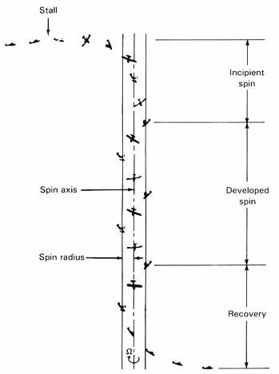
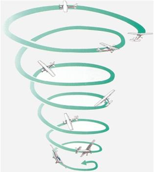

Review Power-off, Power-on stalls, and incipient spins
Recognize the symptoms of spiral dive
Recover from spiral dive
Motivation
Why: Dangerous in both high and low altitudes (high altitude we could break the aircraft/ low altitude close to the ground and rate of descent is high)
When:
Poorly executed steep turn
Incorrectly entered spin
In the cloud
Circuit (base to final when we add more bank/ that’s why we use gentle turns in the circuit)
Threshold Knowledge Test
Essential background Knowledge
Definition of spiral dive(FTM P.85):
descending turn with increasing airspeed and rate of descent
G-loading on human body (heavy weight, tunnel vision, grey-out, black-out, g-loc)
SPIN

SPIRAL

Procedures
HALT check (height at least 3500feet)
Recovery (POH emergency procedure):
Power – idle
Wing – level
Ease out of dive
Safety
No solo practice
HALT check (especially height is very important)
ASI
Pre-flight inspection (check bolts, nuts, rivets)
Why angle of bank increases as the turn continues?
A: In a turn the outside wing has to travel farther than the inside wing.
Since it has to travel farther in the same amount of time it must be travelling faster.
Therefore, the outside wing generates more lift than the inside wing, which tends to increase the bank
and tighten the turn.
Why airspeed increases as the turn continues?
A: The aircraft does not have enough vertical lift to hold it up so it starts to drop which decreases
the angle of attack. Since it is preprogrammed to maintain its trimmed angle of attack the nose automatically
pitches down and the airspeed starts to increase.